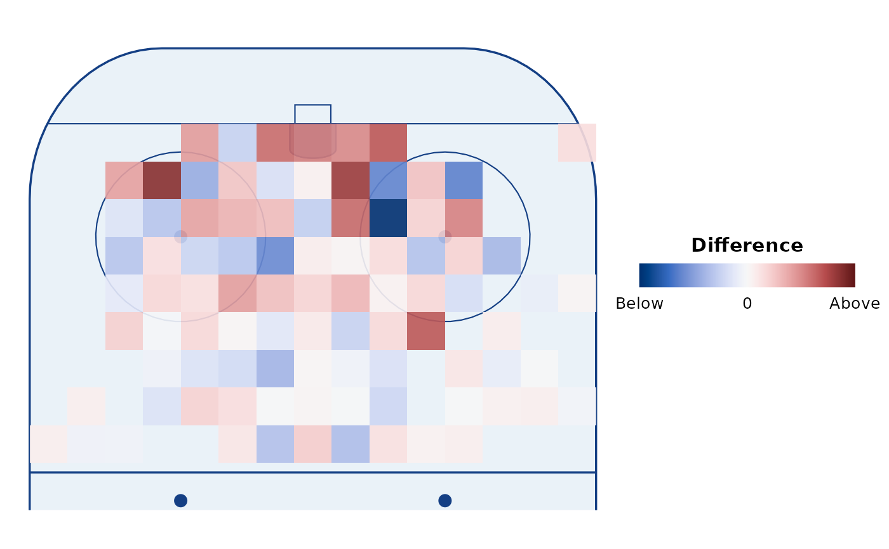

Aggregates events into the square grid that geom_rink_bin() draws: one row per
occupied cell (per group) with the event count and the mean value. Use it to derive
your own cell values (differences between teams, shrinkage, rates per 60, ...) and
plot them with geom_rink_bin(precomputed = TRUE).
Usage
rink_bin(
data,
x,
y,
value = NULL,
binwidth = 2.5,
by = NULL,
dimensions = IIHF,
xlim = NULL,
ylim = NULL
)Arguments
- data
A data frame of events.
- x, y
Coordinate columns (unquoted).
- value
Column to average within each cell (unquoted). Omit for counts only (
valueis thenNA).- binwidth
Cell size, in rink units.
- by
Columns to group by in addition to the cell, e.g.
teamorc(team, period)(unquoted, tidyselect).- dimensions, xlim, ylim
Binning bounds, as in
geom_rink_bin().
Value
A tibble with the by columns, x and y (cell centres), n (event
count) and value (mean of value, ignoring NAs).
Examples
cells <- rink_bin(shots, x, y, value = xg, binwidth = 2, by = team)
head(cells)
#> # A tibble: 6 × 5
#> team x y n value
#> <chr> <dbl> <dbl> <int> <dbl>
#> 1 Lakeside 39 1 1 0.0084
#> 2 Lakeside 39 5 1 0.0168
#> 3 Lakeside 39 7 2 0.0226
#> 4 Lakeside 39 9 1 0.0256
#> 5 Lakeside 39 11 3 0.0312
#> 6 Lakeside 39 13 3 0.0330
# Difference between the two teams, cell by cell
library(ggplot2)
wide <- merge(cells[cells$team == "Lakeside", ], cells[cells$team == "Northfield", ],
by = c("x", "y"), suffixes = c("_a", "_b"))
wide$value <- wide$value_a - wide$value_b
wide$n <- wide$n_a + wide$n_b
ggplot(wide, aes(x, y)) +
annotate_rink(zones = "oz", orientation = "vertical") +
geom_rink_bin(precomputed = TRUE, style = "fill", diverging = TRUE, binwidth = 2)
